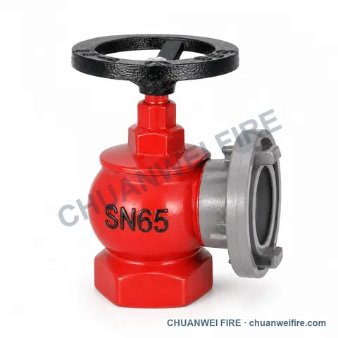
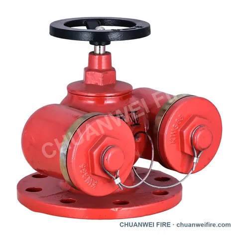
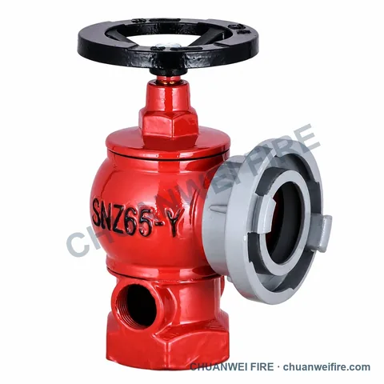

Product family
Indoor Fire Hydrants
Indoor fire-water outlet valves in standard, slanted, double-outlet and pressure-regulating configurations.

Available product types
Indoor Fire Hydrants
Use these pages to identify the required product type. Final dimensions, pressure ratings, materials, connection standards and approvals are confirmed before quotation.

Export Slanted Hydrant Valves
View product details
Double-Outlet Indoor Hydrants
View product details

Straight-through Landing Valve
View product details
Oblique threaded Landing Valve
View product details
Oblique flanged Landing Valve
View product details
Horizontal-Handwheel Landing Valves — Threaded inlet
View product details
Horizontal-Handwheel Landing Valves — Flanged inlet
View product details

Right-Angle Fire Hose Valve — S-011
View product details
Large Angled-Outlet Fire Hose Valve — S-012 / S-013
View product details
Compact Angled-Outlet Fire Hose Valve — S-014
View product details
Left-Outlet Fire Hose Valve — S-015 / S-016 / S-017
View product details
Male-Threaded Bottom-Inlet Fire Hose Valve — S-018 / S-019 / S-020
View product details
Female-Threaded Bottom-Inlet Fire Hose Valve — S-021 / S-022 / S-023
View product details
Left Angled-Outlet Fire Hose Valve — S-024 / S-025 / S-026
View product details
Male-Threaded Bottom-Inlet Fire Hose Valve — S-040 / S-041
View product details
Female-Threaded Bottom-Inlet Fire Hose Valve — S-050 / S-051
View product details

Fire Hose Valve with Hose Tail — S-060
View product details
Round-Body Female-Threaded Fire Hose Valve — US-026 / US-027
View product details
Barrel-Body Right-Outlet Fire Hose Valve — US-030 / US-031
View product details
Barrel-Body Left-Outlet Fire Hose Valve — US-032 / US-033
View product details
Female-Threaded Fire Hose Valve — US-040 / US-041 / US-042
View product details
Capped Fire Hose Valve — US-043 / US-044
View product details
Top-Latch BS336 Fire Hose Valve — S-031 / S-032 / S-033
View product details
Latch-Outlet BS336 Fire Hose Valve — S-034 / S-035
View product details
Angled-Outlet BS336 Fire Hose Valve — S-070
View product details
Flanged Fire Hose Valve — SF-031 / SF-032 / SF-033 / SF-034 / SF-035
View product details
JIS Fire Hose Valve — MS-011 / MS-012 / MS-013 / MS-014
View product details
Latch-Coupled Fire Hose Valve — MS-020 / MS-021
View product details
Storz Fire Hose Valve — DS-040
View product details
GOST Fire Hose Valve — RS-010 / RS-011
View product details
French-Connection Fire Hose Valve — FS-010
View product details
French-Pattern Capped Fire Hose Valve — FS-020 / FS-021
View product details
Union Fire Hose Valve — FS-033
View product details
NH Fire Hose Valve — BS-010 / BS-011 / BS-012
View product details
Capped Fire Hose Valve with Locking Ring — US-045 / US-046 / US-047 / US-048
View product details
Horizontal-Handwheel Fire Hose Valve — GV-011 / GV-012
Additional models and specifications

Horizontal-Handwheel Fire Hose Valve — GV-013
View product details
Valve with Pressure Gauge — S-131
View product details
Straight-Through Handwheel Valve — BV-014
View product details
Long-Lever Ball Valve — BV-010 / BV-011 / BV-012 / BV-013
View product detailsProduct selection
Details that help us prepare your quotation
Start with your name or company and the product you need. Add the details below when available. For market-specific connections, a drawing or mating sample helps us check compatibility.
- Nominal size and connection
- Working pressure and medium
- Quantity and destination
- Drawing, sample or required standard
Send your product requirement
Tell us your name or company and the product you need. You can add the model, size, quantity and destination later.
Review and send the draft in WhatsApp or your email app. You can attach photos and drawings there. If the app does not open, use our contact page. Contact details →